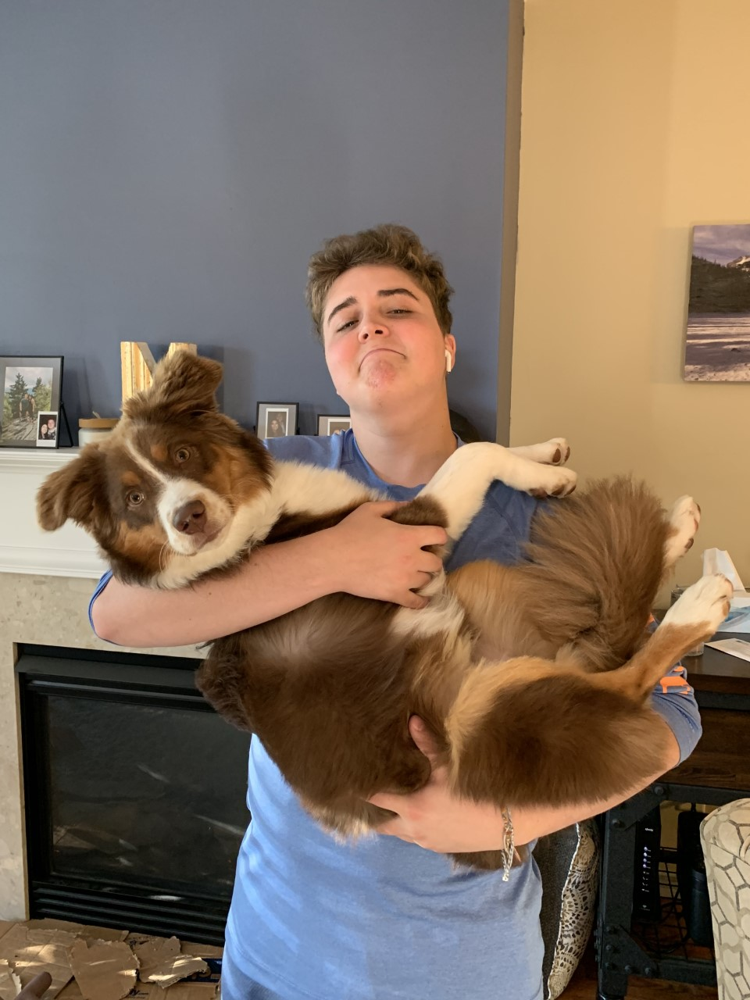

Mr. WorldWide Eats is a restaurant with a goal to bring diverse cultures together.
By having multiple regions and their classic dishes represented in one place, we hope to bring people together and create a sense of community. We care about our customers, and we care about furthering everyone's cultural understanding. By providing foods from around the globe, not only do we hope to bring people together for a wonderful experience, but we strive to broaden the perspectives of all of our beloved customers.
Mr. WorldWide Eats was founded by Davis Murrell, a young chef with a passion for food and for learning about various cultures. He has spent years learning the ins-and-outs of cooking styles from Japan to Mexico to Italy. He is currently seventeen years old. His passion for cooking stems from his love for food shows and from helping his parents cook ever since he could hold a spatula. Further, as a cancer survivor, he wants to bring more joy into the world wherever he can.
Davis Murrell with his dog nephew:
